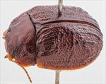
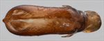
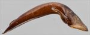
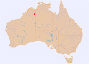

Click on images to enlarge
{kind=link}

Male, Purnululu N.P., N.W. Western Australia
{kind=link}

Aedeagus, dorsal view (Purnululu N.P., N.W. Western Australia)
{kind=link}

Aedeagus, lateral view (Purnululu N.P., N.W. Western Australia)
{kind=link}

Distribution
Name
Trachymela sp. Ta79
Reference specimen
2007-253b, Purnululu N.P., N.W. Western Australia
Adult Description
Length: ♀ 6.2-6.9 mm [2], ♂ 6.1-6.2 mm [2].
Colour: head mid- to dark reddish-brown with diffuse areas of slighly darker shade, mandibles substantially black or at least with black tips, labrum yellow-brown; antennomeres 1-5 straw-brown, 7-11 similar or grading fractionally to slightly darker; pronotum: brown, same shade as head, with a thin dark-brown to black, longitudinal, irregular patch extending almost full length of pronotum on each side behind the inside edge of eye, in some specimens these are connected by faint oblique dark lines resulting in an “M”-shaped mark with its base on the posterior margin, a round black mark is present in centre behind outside edge of each eye; scutellum: mid- to dark brown, broadly edged in darker brown or black; elytra: brown, same shade as pronotum, VR3, darker brown or or rarely black, present mostly as isolated verrucae anteriorly, but as a continuous, prominently elevated dark-brown or black ridge in posterior third of elytra, VR5 sometimes noticeably present as a series of darkr verrucae, particularly in posterior third, VR9 usually prominent in posterior third as a dark series of verrucae, sometimes joined into a continuous ridge, many small to medium-sized dark-brown or black verrucae scattered over much of surface, some verrucae extended transverely, verrucae just behind antero-median depression align to form a thin, sometimes interrupted, transverse dark-brown or even black elevated ridge, punctures are fractionally darker than interstices, humeral callus same colour as surrounding surface or darker; venter: head dark-brown, thoracic ventrites mid-brown, with some darker patches present, abdominal sternites similar or fractionally paler, inside surface of elytral epipleura black in posterior half, brown anteriorly. Cuticular wax: unknown.
Shape: rather flattened (height=39-46%BL), greatest height viewed laterally is in posterior half, thoracic ventrites approximately level with elytral margin. Head; punctures moderately sized (pd~2-2.5xef) and relatively evenly and densely packed, much finer punctures are present on the interstices. Antennae short (AL ♂=39-42%BL, ♀=33-35%BL), filiform. Pronotum; almost evenly curved transversely, barely explanate only very close to margin, foveal depression very shallow or absent with whole of marginal area noticeably raised in a shallow dome in some specimens, a round, unpunctured, well-defined verruca in centre, discal area very slightly rugulose, bounded laterally by a slightly raised (black) ridge, punctures clearly impressed and quite evenly and moderately densely distributed in discal area, size similar to those on head, much finer punctures scattered among them, becoming coarser from foveal depression to lateral margins. Front margins join lateral margins in a smoothly rounded right-angle, with lateral margin curving smoothly and very gradually towards rear margin, pronotum widest quite close to posterior margin. Scutellum; punctured, punctures similar to or fractionally smaller than those on adjacent area of pronotum. Elytra; surface evenly curved transversely, very lightly curved longitudinally in anterior half, then more strongly curved, punctures large and distinct and relatively evenly distributed on anterior half, with much smaller punctures scattered sparingly on the interstices, many smooth, elevated verrucae, some with small central punctures are scattered over elytral surface (see colour above for arrangement) and some longitudinally extended ridges are present in posterior third, surface continuous under humeral callus; posterior third of marginal area prominently concave, separated from discal area by a row of small verrucae in VR9 (often partially or fully merged). Vertical extension of epipleura small (HCE/PW=0.29-0.34). Venter; Prosternal process narrowest anteriorly to almost parallel-sided, closed anteriorly, short setae sparsely distributed over prosternal process, absent from mesosternum, a single seta on anterior and median trochanter; front edge of metasternum beveled, rounded; inner edge of posterior of epipleurae lacking setae. Aedeagus; moderate-sized (LPE=30-33%BL), in dorsal view, sides diverging very slightly from basal sulcus towards apeax until about middle of ostium from where sides converge towards apex in a smooth arc, dorsal surface with well-defined dorso-median channel and dorsolateral channels resulting in two long ostial flaps protruding far towards apex in the tear-shaped ostial depression; tip small and smoothly triangular; in lateral view, curved sharply through about 45⁰ near base then ventral surface almost straight to apex, dorsal surface straight for about half this distance, then converging evenly towards ventral surface, tip deflexed.Larvae
unknown.
Eggs
unknown.
Similar species
Ta87 – this species is very similar both in dorsal sculture and the shape of the aedeagus. The aedeagus of Ta79 is slighly (6%) shorter than that of similar-sized specimens of Ta87, and it is a little narrower but otherwise almost identical. Only in very rare examples of Ta87 is the transverse elevation behind the basal depression present as an almost uninterrupted ridge. The apical portions of VR3 and often VR9 are in the form of mostly uninterupted, well-elevated ridges in Ta79, while they are commonly in the form of more isolated verrucae in Ta87. However, it is very possible that Ta79 is conspecific with Ta87.
Notes
The few specimes of Ta79 known have been collected from Eucalyptus limitaris (Symphyomyrtus: Adnataria) at a single location in Purnululu N.P.
This species is very close to or may be the same as the eastern Australian Ta87, see “Similar Species” above.Copyright © 2026. All rights reserved.